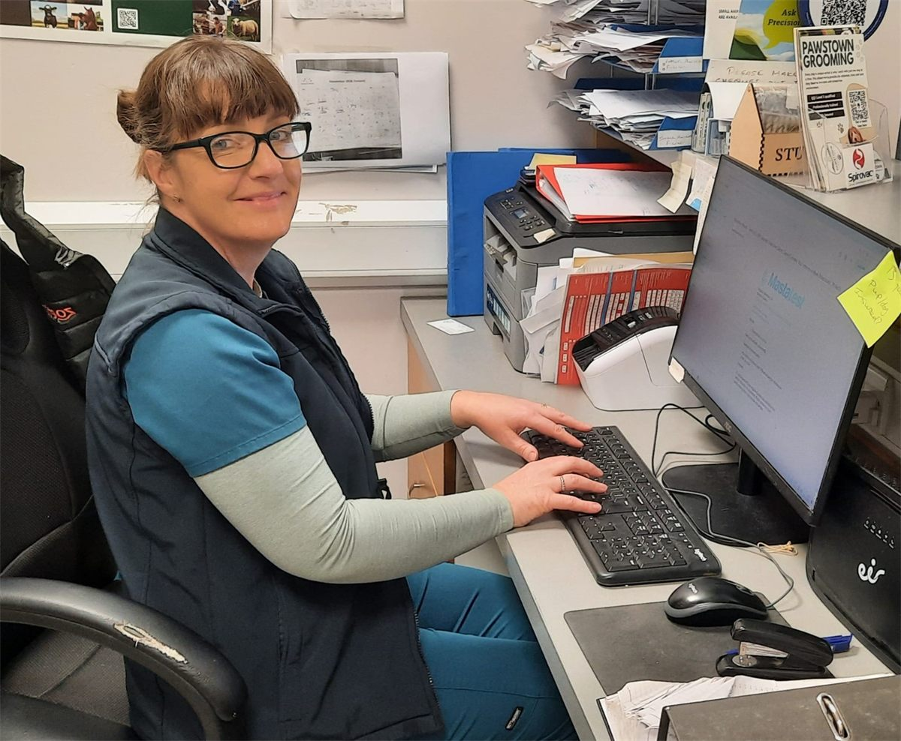

experience in Mallow
A mixed practice built on relationships
Kingston Crowley Veterinary brings together Gerard Kingston, who has been treating animals in Mallow since qualifying in 1991, and Kenneth Crowley, who grew up on a farm and always dreamed of becoming a vet.
As a mixed practice, we care for everything from family dogs and cats to dairy herds. No two days are the same, and our team loves that variety. We take great pride in the lasting relationships we've built with pet owners and farmers across North Cork.
From emergency triage to routine wellness, our vets and nurses work together to keep your animals happy and healthy. Rest assured your animal is in capable, caring hands from arrival to discharge.
Meet the team
Select a team member to read their full story.
A day at Kingston Crowley



Come and meet us
Whether it's a new puppy, an elderly cat or a herd health plan, we'd love to help. Call us on 022 21258 to book an appointment.